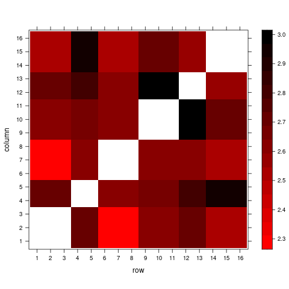
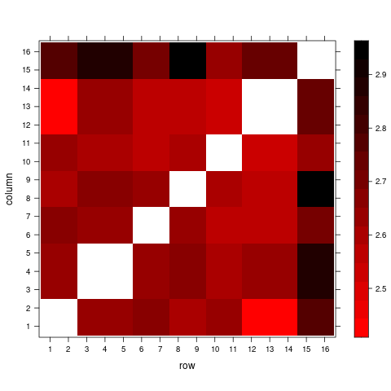
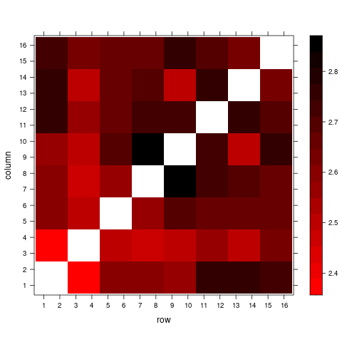
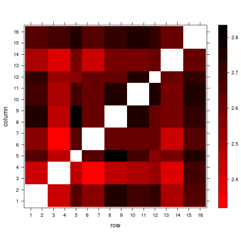
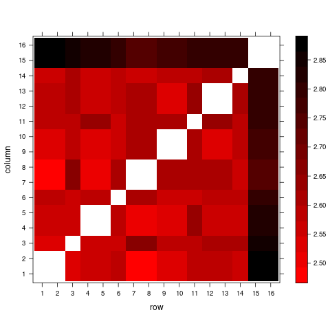
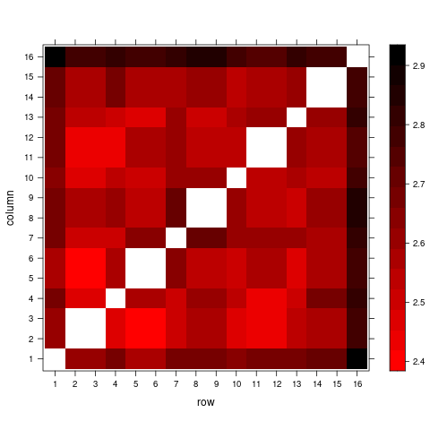
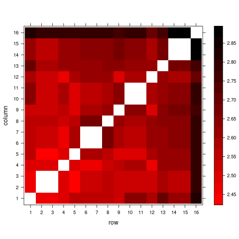
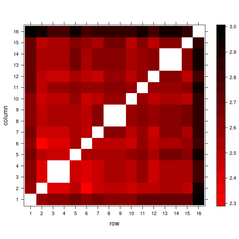
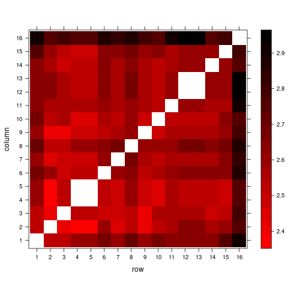
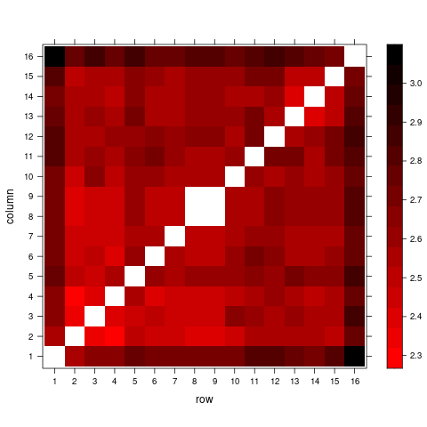

Dissimilarities (New)
Upsampling of all albums to 16, but plotting dissimilarity matrices separatelly for each album length.
Album length: six

Album length: seven

Album length: eight

Album length: nine

Album length: ten

Album length: eleven

Album length: twelve

Album length: thirteen

Album length: fourteen

Album length: fifteen

Album length: sixteen